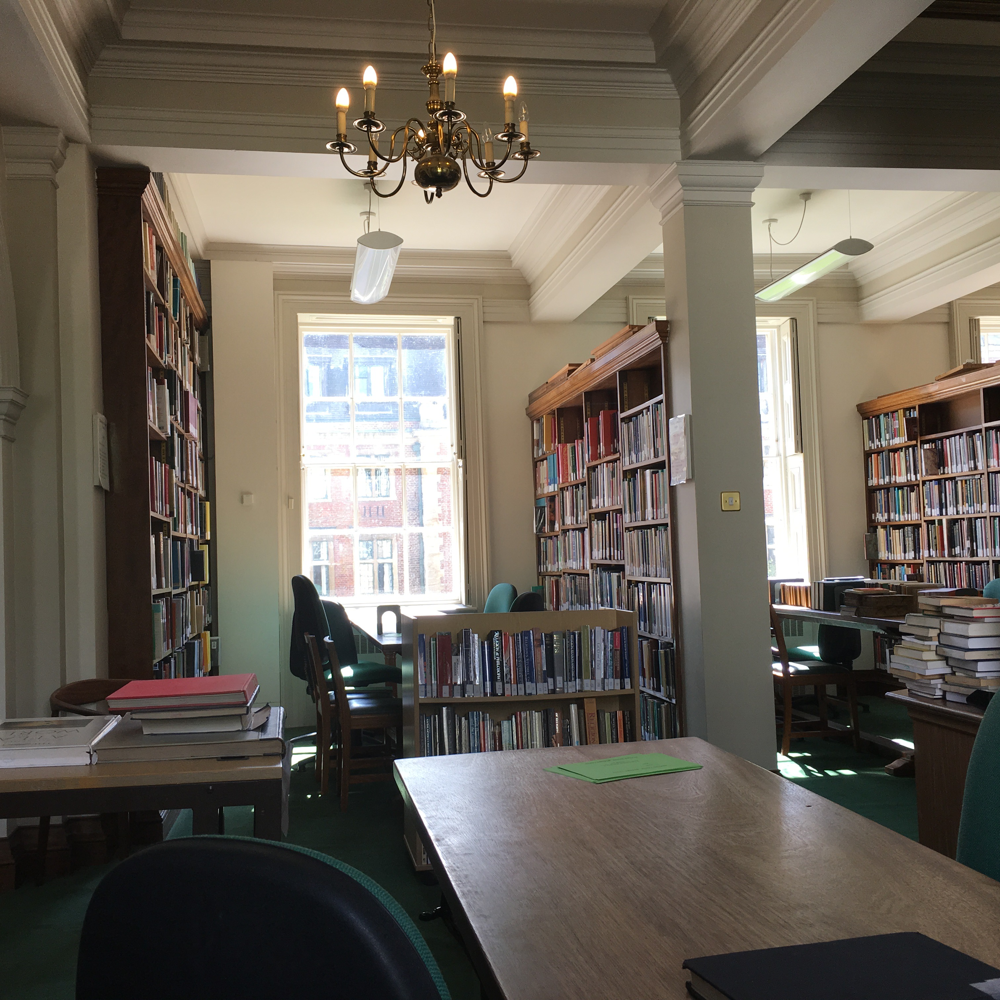

Mark's Skills
Throughout the course of my professional career, I have had the numerous wonderful opportunities that have greatly expanded my skill set. My various positions and leadership roles have greatly expanded the soft skills that I had before entering into graduate school. With regard to my more testable hard skills, every single one of my courses and expereinces since pursuing my degree in History has greatly proliferated them. While a majority of the following skills have been learned in the classroom or the workplace, some of them I also picked up and have pursued on my own. For instance, I continue to find myself perusing different metadata standards, and learning new languages (both human and computer-based).

Soft Skills
- Interdisciplinary/Interdepartamental Collaboration
- Leadership
- Perceptievness
- Project Management
- Team-Oriented
- Self Motivated
- Strong Commitment and Work Ethic

Hard Skills
- Cataloging
- Collections Management
- Academic Research
- Exhibit Development/Installation
- User Needs Assessment
- Records Appraisal
- Records Management
- Database Management
- Microsoft Access
- File Maker Pro
- XML
- MARC
- MODS
- DublinCore

Languages
- English
- Spanish
- Python
- HTML
- CSS
- C++